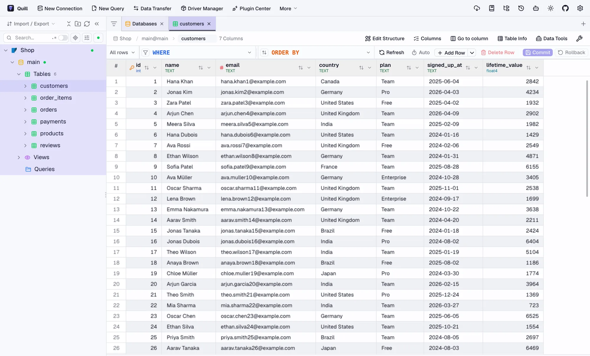

Quill
Write your data in plain words.
Ask your database a question in plain English. Quill reads the schema, writes the SQL, and shows you the answer.
For macOS, Windows and Linux. Free and open source.
Which products made the most money this year?
Used 3 tables: products order_items orders
SELECT p.title,
SUM(oi.quantity * p.unit_price) AS revenue
FROM order_items oi
JOIN products p ON p.id = oi.product_id
JOIN orders o ON o.id = oi.order_id
WHERE o.created_at >= '2026-01-01'
GROUP BY p.title
ORDER BY revenue DESC
LIMIT 5;The 4K Monitor brought in $26,320 this year, almost three times as much as the next product.
How it works
-
Connect
Add a database the way you would in any client: a host and password, a file, an SSH tunnel or a connection string.
-
Ask
Type a question in plain words. Quill finds the tables it’s about, follows the foreign keys between them and writes SQL for your database’s dialect.
-
Check and run
You see the tables it used, the SQL, the rows and a chart. Edit the query, open it in the editor or save it. Changes to data wait for your approval.
It reads your schema before it writes a line.
Quill matches the words in your question against table names, columns and comments. Then it follows foreign keys to find how those tables connect, including the ones you never mentioned.
In a database with 204 tables, “which customers bought which products” brings back exactly four: the two you named and the two that join them.
A full database client underneath.
When you’d rather write the SQL yourself, everything is still here.

- Edit safely Change rows in the grid and commit or roll back as one batch.
- Compare Diff schemas or data between two databases.
- Move data Transfer tables between databases, even different engines.
- Import and export CSV, Excel, JSON and SQL, with progress you can follow.
- Connect anywhere SSH tunnels, TLS certificates and connection strings.
- Use it from your agent A built-in MCP server lets Claude Code and other agents query your connections.
Nearly 90 databases. One window.
Relational, analytical, document, key-value, search, vector and time-series. Connect directly, over SSH, or through JDBC.
PostgreSQL MySQL SQLite SQL Server Oracle ClickHouse DuckDB MongoDB Redis Snowflake BigQuery Elasticsearch Cassandra Redshift Databricks SQL MariaDB Trino Neo4j IBM DB2 SAP HANA DynamoDB Cloud Spanner Cloudflare D1 Turso StarRocks Doris Vertica Teradata Hive Spark Qdrant Milvus Weaviate ChromaDB InfluxDB QuestDB TDengine Meilisearch Solr CouchDB Firebird H2 Exasol OceanBase openGauss etcd ZooKeeper and many more
Read-only until you say yes.
Answers come from read-only queries. When a request would change data, Quill shows you the exact statement and waits. Nothing runs until you approve it.
Mark a connection as production, or lock it to read-only, and it stays that way.
Delete orders placed before 2025?
DELETE FROM orders
WHERE created_at < '2025-01-01';This changes data. Quill will only run it after you confirm.
Your schema stays close.
Finding the right tables happens on your computer, with no extra service. Only the few tables a question needs go to the model you pick.
- Claude
- OpenAI
- Gemini
- DeepSeek
- Any OpenAI-compatible API
- Ollama, fully local
Download Quill
Free and open source, for macOS, Windows and Linux.
First launch on macOS: right-click Quill and choose Open. On Windows, if SmartScreen appears, choose More info, then Run anyway.